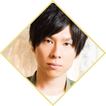
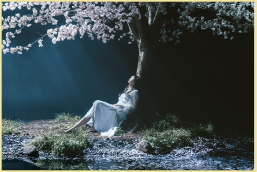

配信は終了しました
番組概要
「Fate/Grand Order」の5周年を記念した配信番組が決定！
豪華出演陣を迎えて、FGO PROJECTやFate PROJECTの最新情報をお届けいたします！
「Fate/Grand Order」主題歌歌唱の坂本真綾や「Fate/stay night [HF]」主題歌歌唱のAimer、さらにバンドサウンドによるゲームBGMの豪華メドレーのライブパートもお届け！
事前配信ではオフィシャルグッズの実物の紹介などもいたします。
- ※坂本真綾、Aimerのライブ映像はリアルタイムのみの配信となり、タイムシフトおよびアーカイブ配信ではご覧になれません。
- ※ライブアーティストはVTR出演のみとなります。
- ※番組の配信時間は2時間から2時間半程度を予定しております。
- ※「Twitter LIVE」「ABEMA」は15:30の本配信からの配信となります。
- ※事前配信は、Fate/Grand Order 宣伝スタッフが出演いたします。
出演者
キャスト(50音順)
- 赤羽根健治
- 
- 植田佳奈
- 大久保瑠美
- 川澄綾子
- 島﨑信長
- 関智一
- 高橋李依
- 田中美海
- 鶴岡聡
- 悠木碧
ライブアーティスト
- 坂本真綾
- Aimer
- 
- ※坂本真綾、Aimerのライブ映像はリアルタイムのみの配信となり、タイムシフトおよびアーカイブ配信ではご覧になれません。
Fate/Grand Order 5th
Anniversary BAND with
東京都交響楽団 feat. Ayasa
堀崎翔（Gt）、田辺トシノ（Ba）、青山英樹（Dr）、吹野クワガタ（Key）
Ayasa（Vn）
東京都交響楽団
（Cho）
北川勝利、宮川弾、YURIKO KAIDA、六花、乃藍、SAYA、MAAKIII（from DracoVirgo）、KOCHO、岡田梨央、acane_madder
MC
- マフィア梶田
公式グッズ一覧

Fate/Grand Order 5th Anniversary
"under the same sky"
advertising works
¥4,000(税込)※お1人様5点まで
5周年を記念して広告用に描かれた48種の"under the same sky"イラスト。これらを全種収録するだけでなく、広告では見る事が出来なかったサーヴァントの全身イラストも掲載された豪華なビジュアルブックです。
- ※デザイン・仕様は監修中のものとなり、変更される可能性がございます。

"under the same sky"
サーヴァント別 アクリルマスコット
全50種 ¥1,200(税込)※お1人様各3点まで
"under the same sky"のサーヴァントイラスト（全身イラスト）を使用したアクリルマスコットです。
"under the same sky"
イラスト別 クリアファイル
全48種 ¥400(税込)※お1人様各3点まで
"under the same sky"のイラストを使用したクリアファイルです。
"under the same sky"
イラスト別 B2タペストリー
全48種 ¥3,000(税込)※お1人様各3点まで
"under the same sky"のイラストを大きく飾って楽しめるB2タペストリーです。

"under the same sky"
コレクションブロマイド
①北海道・東北（7種ランダム） ¥200(税込)
②関東・甲信（11種ランダム） ¥200(税込)
③東海・北陸（6種ランダム） ¥200(税込)
④関西（7種ランダム） ¥200(税込)
⑤中国・四国（9種ランダム） ¥200(税込)
⑥九州（8種ランダム） ¥200(税込)
各地にサーヴァントが訪れたイメージ"under the same sky"イラストを、実際撮影されたかのようなブロマイドにいたしました。
- ※各地域の中からランダムとなります。
- ※各地域ごと、お1人様単品各10点、10枚セット1点まで（合計20点）となります。
"under the same sky"
コレクションブロマイド
コンプリートセット＋ブロマイドファイル
¥11,000(税込)※お1人様3点まで
コレクションブロマイドの48種全種と、48種のブロマイドを収納できるファイルのセットです。
"under the same sky"
霊基召喚缶バッジ
Ａ全25種 ¥300(税込)
Ｂ全26種 ¥300(税込)
"under the same sky"のイラストを使用した霊基召喚缶バッジです。
- ※Aは「北海道・東北」、「関東・甲信」、「東海・北陸」エリアの中からランダムとなります。
- ※Bは「関西」、「中国・四国」、「九州」エリアの中からランダムとなります。
- ※各種類ごと、お1人様単品各10点、10枚セット2点まで（合計30点）となります。
リヨ 描き下ろしイラスト ラバーチャーム
全16種 ¥800(税込)※お1人様各3点まで
5周年描き下ろしのリヨイラストを使用した、ラバーチャームです。
Fate/Grand Order 5周年記念ブローチ
¥1,000(税込)※お1人様3点まで
FGO5周年記念のロゴのブローチです。
マグカップ
A ¥2,000(税込)
B ¥2,000(税込)
家で普段使いしやすいマグカップです。
AはFGO5周年記念のロゴを使用したシックなデザインのものです。
Bはリヨ描き下ろしイラストを使用した可愛いデザインのものです。
- ※各種類ごと、お1人様3点まで
エコバッグ
A ¥1,000(税込)
B ¥1,000(税込)
ちょっとした買い物で使用しやすいエコバッグです。
Aは、FGO5周年記念のロゴを使用したシックなデザインのものです。
Bは、リヨ描き下ろしイラストを使用した可愛いデザインのものです。
- ※各種類ごと、お1人様3点まで
指令紋章（コマンドコード）
トレーディングアクリルキーホルダー vol.2
キャラクター（全5種） ¥500(税込)
モチーフ（全7種） ¥500(税込)
指令紋章（コマンドコード）が描かれたキーホルダーです。サーヴァントが描かれた「キャラクター」とサーヴァント以外が描かれた「モチーフ」がございます。
- ※お1人様10点まで